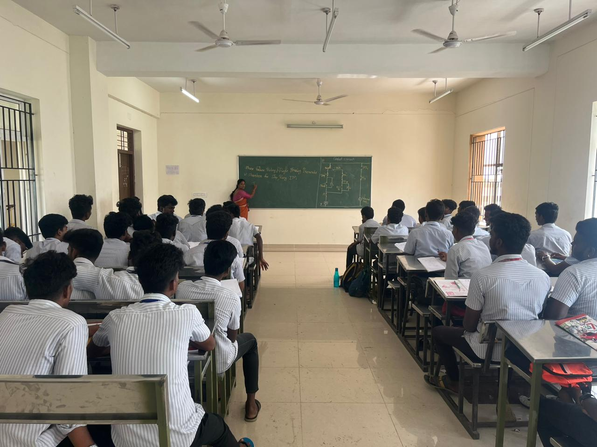
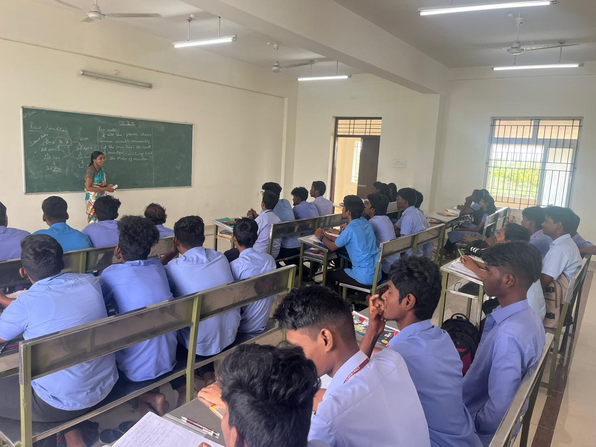
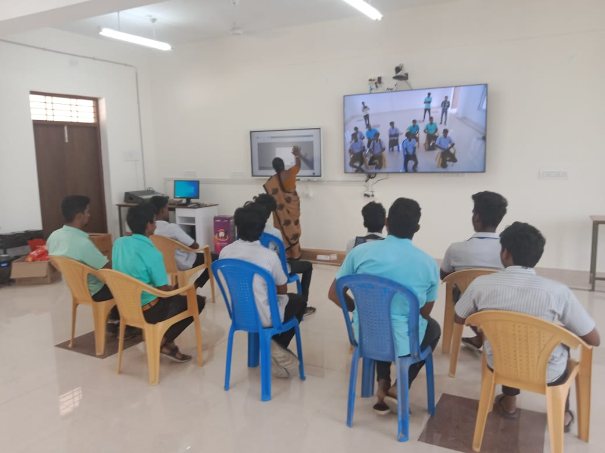
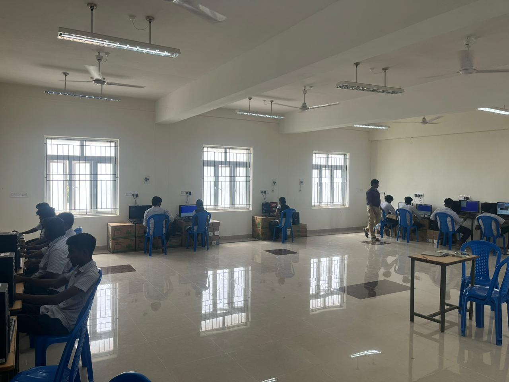
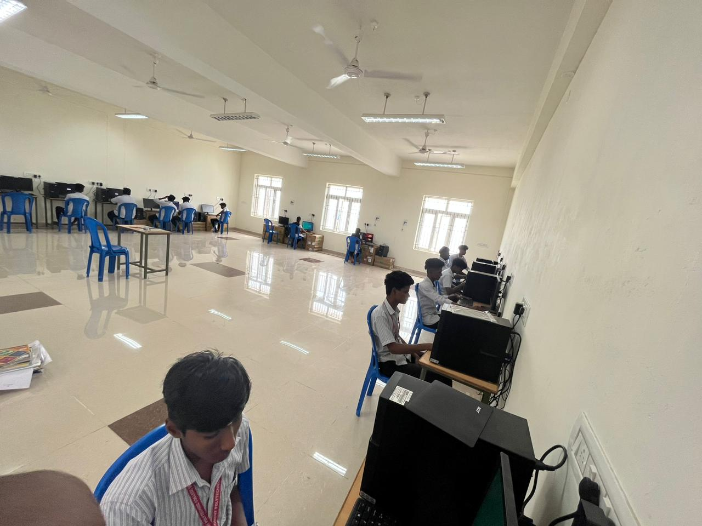
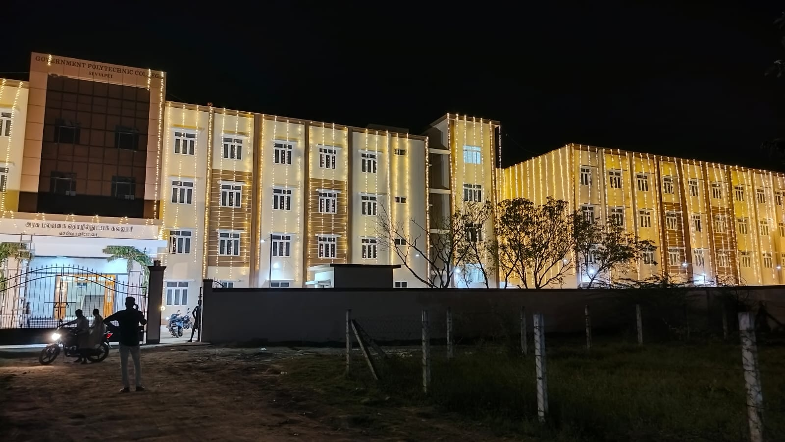
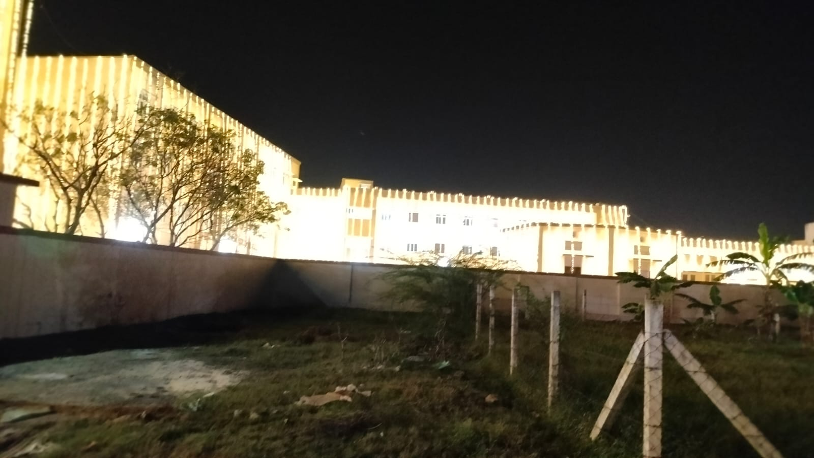
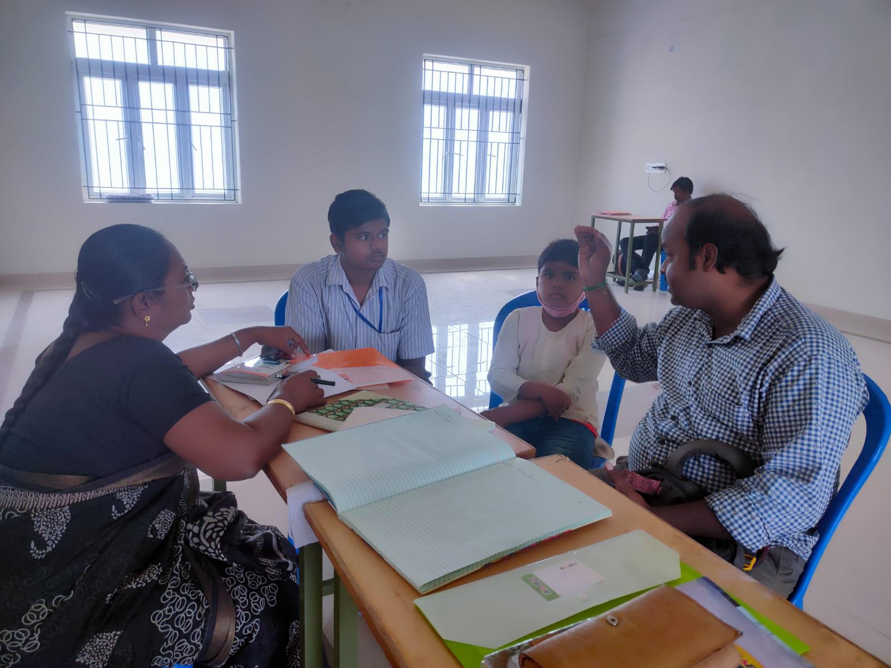
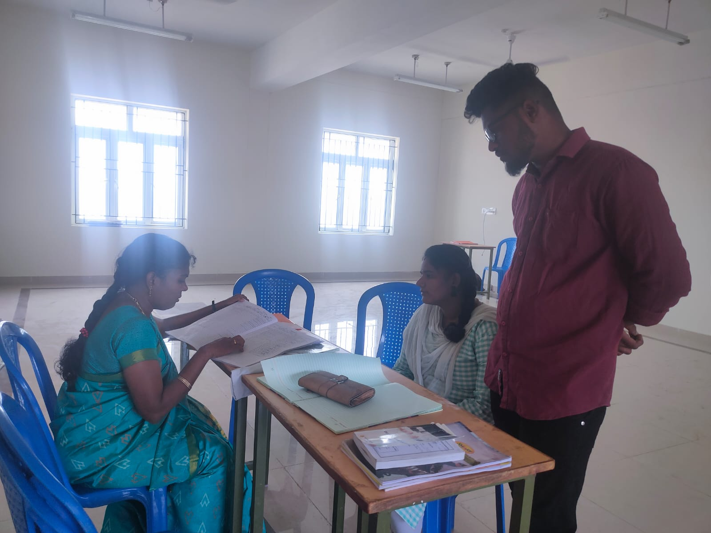

FACILITIES
Facilities at Government Polytechnic College, Sevvapet:
Classrooms:


At Government Polytechnic College, Sevvapet, we provide spacious and well-equipped classrooms that create a conducive learning environment for our students. Our classrooms are designed to accommodate a large number of students comfortably and are equipped with modern teaching aids such as audio-visual equipment and smart boards. We ensure that the classrooms are well-maintained, adequately lit, and ventilated, promoting an atmosphere of focused learning.
Smart Classrooms:

We use state of the art technologies including smart classrooms and projectors to ensure that students get maximum benefit out of them.
Laboratories:


We understand the significance of practical learning in technical education. That's why we have well-equipped laboratories for each department, enabling students to gain hands-on experience and enhance their practical skills. Our laboratories are equipped with state-of-the-art equipment, tools, and software to facilitate practical sessions, experiments, and research work. Our dedicated faculty members and lab assistants provide guidance and supervision to ensure a safe and enriching laboratory experience.
Library:
Our library is a treasure trove of knowledge, offering an extensive collection of books, reference materials, journals, e-books, and online databases. It provides a quiet and comfortable space for students to study, research, and explore various subjects. The library is staffed by experienced librarians who offer guidance and support in locating resources, accessing e-books and digital resources, and conducting research. We regularly update our collection to ensure that students have access to the latest information and resources.
Campus:


We understand the significance of practical learning in technical education. That's why we have well-equipped laboratories for each department, enabling students to gain hands-on experience and enhance their practical skills. Our laboratories are equipped with state-of-the-art equipment, tools, and software to facilitate practical sessions, experiments, and research work. Our dedicated faculty members and lab assistants provide guidance and supervision to ensure a safe and enriching laboratory experience.
Spread across a sprawling campus, Government Polytechnic College, Sevvapet offers ample space for academic and extracurricular activities. The campus is meticulously maintained, providing a clean, green, and serene environment for our students. We believe that a well-maintained campus fosters a positive learning experience and encourages creativity and collaboration among students.
Guidance and Counseling:


We understand that students may require guidance and support throughout their academic journey. Our college has a dedicated guidance and counseling cell that offers academic guidance, career counseling, and personal support to students. Our experienced counselors provide one-on-one guidance, helping students navigate their educational and career paths. They offer assistance in course selection, study strategies, time management, and addressing personal challenges, ensuring that students receive the necessary support for their overall well-being and academic success.
Wi-Fi Connectivity:
To facilitate digital learning and research, our campus is equipped with high-speed Wi-Fi connectivity. Students can access online resources, participate in e-learning platforms, and collaborate on projects seamlessly. The availability of Wi-Fi connectivity ensures that students can stay connected and utilize online tools and resources for their academic and research needs.
We, at Government Polytechnic College, Sevvapet, are committed to providing a conducive and enriching learning environment for our students. Our well-maintained classrooms, well-equipped laboratories, extensive library resources, clean and spacious campus, and dedicated guidance and counseling services are aimed at providing a holistic educational experience. We strive to provide the necessary facilities and support to ensure that our students receive quality education and have the resources they need to excel in their chosen fields.